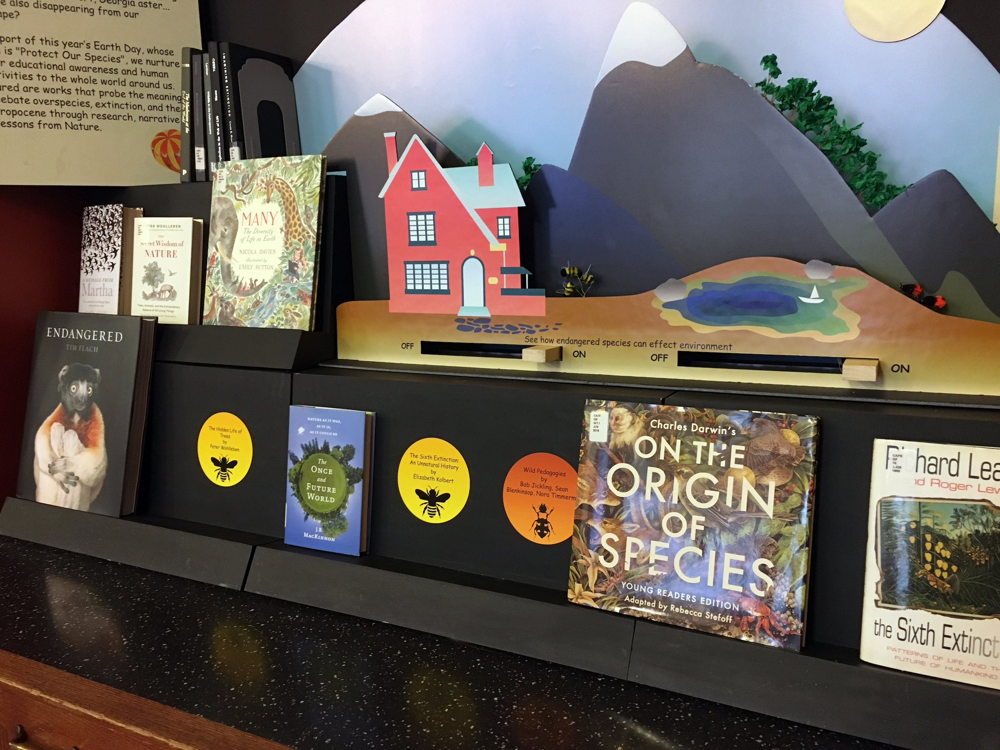

Teaching About Species
» Teamwork @ EdLab
» Role: Concept/Visual designer & Fabricator
» Collaboration: Librarian Team
» 2019 Late April - May
» Exhibited @ Everett Cafe, Teachers College Columbia University
This book display was a collaboration with the librarians from Gottesman Libraries at Columbia University, for promoting "The Everett News Cafe Book Collections". Each collection is tethered to a large news event (or the occasional library event) and seeks to help cafe visitors gain context and deeper understanding of the subject.
In support of this year’s Earth Day, whose theme is "Protect Our Species", TEACHING ABOUT SPECIES hopes to nurture deeper educational awareness and human sensitivities to the whole world around us. It helps highlight works that probe the meaning and debate over species, extinction, and the Anthropocene through research, narrative, and lessons from Nature.
In this project, I developed the idea of creating an installation with multiple layers and using the simple interaction to attract targeting audiences in the Cafe space.
Main Tools
Visual Design | Adobe Illustartor | Large-scale Print | Lasercutting
Design Process
Design focuses and challenges:
» Getting people's attention on the books when they pass the Cafe entrance area
» Showing the long-term effects if we keep losing species in an understandable and compelling way
A multi-layer system is designed where the endangered species are on the same handle with the objects they effect in the environment, so that when the species are "turned off" (hidden behind the static layers), connected elements also disappear.
The decoration and color in Everett Cafe are mostly dark red and is kind of heavy. Therefore, bright color mixed with hand-craft style was chosen as the visual style to cheer up the Cafe environment a little bit.
Graphic design and layout in Illustrator
Booktags graphic design
{kind=link}
{kind=link}
{kind=link}
{kind=link}
{kind=link}
INTERACTION
Honeybee and American burying beetle are the two species chosen to show.
{kind=link}
{kind=link}
About Honeybee
» They are critical pollinators: they pollinate 70 of the around 100 crop species that feed 90% of the world. Honey bees are responsible for $30 billion a year in crops.
» We may lose all the plants that bees pollinate, all of the animals that eat those plants and so on up the food chain.
» Our supermarkets would have half the amount of fruit and vegetables.
When the Honeybee is turned off, trees & plants disappear with a dead flower shows up.
{kind=link}
{kind=link}
About Burying beetle
» Burying beetles are important recyclers of nutrients in terrestrial ecosystems. By burying and eating carrion , they remove a source of food from flies, which are often pests and health threats. Burying beetles also feed on fly eggs and larvae, helping to reduce their numbers.
» American burying beetles are among the many small critters that decompose (break down) the bodies of dead animals and plants. Without these decomposers, we'd be up to our eyeballs in dead stuff!
When the Honeybee is turned off, green trees are gone while a dead body appears.
OUTCOME
2 days after
1 week after, Half of the books were checked out
{kind=link}
{kind=link}